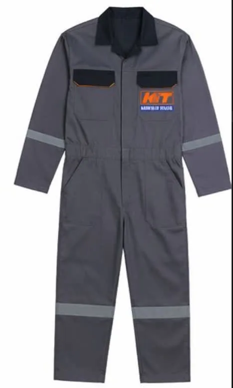

Çalışma ortamı
Sıcaklık, yağış, kapalı alan, açık saha ve araç trafiği ürün ihtiyacını değiştirir.
Fabrika, saha, depo, teknik servis ve hizmet ekipleri için iş kıyafetlerini; görev, kumaş, kalıp, cep, renk ve logo ayrıntılarıyla birlikte planlıyoruz.

“İş elbisesi” ve “iş kıyafeti” ifadeleri günlük kullanımda çoğunlukla aynı ihtiyacı tarif eder: çalışanı yaptığı işe uygun biçimde giydirmek. İş kıyafeti daha genel bir kavramdır; iş elbisesi ise pantolon, tulum, tişört, yelek, sweatshirt, polar ve mont gibi çalışma sırasında kullanılan parçaları anlatır.
Doğru seçim yalnız model veya renge bakılarak yapılmaz. Çalışanın eğilme ve uzanma hareketleri, kullandığı ekipman, ortam sıcaklığı, yıkama sıklığı, görünürlük ihtiyacı ve kurumun marka renkleri aynı planda değerlendirilir. Böylece ekip için görsel bütünlük sağlanırken ürünün günlük işe uygunluğu da korunur.
Tek üründen yazlık ve kışlık ekip setine kadar ihtiyacınıza uygun ürün grubundan başlayın.
Cep kullanımı, hareket ve aşınma bölgelerine göre planlanan iş pantolonları.
Modelleri inceleyin →02Üretim, bakım ve teknik görevler için bütünlüklü çalışma elbiseleri.
Modelleri inceleyin →03Kurumsal renk ve logoyla günlük ekip kullanımına uygun üst giyim.
Modelleri inceleyin →04Saha görünürlüğü, cep düzeni ve katmanlama için yelek seçenekleri.
Modelleri inceleyin →05Serin hava ve dış saha görevleri için kurumsal dış katman modelleri.
Modelleri inceleyin →06Mevsim geçişleri ve kapalı alan ekipleri için rahat ara katman.
Modelleri inceleyin →Teklif istemeden önce bu altı başlığı netleştirmek, doğru model ve kumaşa daha hızlı ulaşmanızı sağlar.
Sıcaklık, yağış, kapalı alan, açık saha ve araç trafiği ürün ihtiyacını değiştirir.
Eğilme, uzanma ve ekipman taşıma; kalıp, esneklik ve cep yerleşimini belirler.
Yıkama sıklığı, dayanım, gramaj ve nefes alabilirlik birlikte değerlendirilir.
Doğru ölçü ve gerektiğinde prova, çalışan kabulünü ve günlük rahatlığı artırır.
Nakış veya baskı tekniği kumaşa, logo ayrıntısına ve bakım koşuluna göre seçilir.
Onaylı model kodu, renk ve beden bilgileri sonraki üretimde standardı korur.
Çalışma koşulları değiştikçe kumaş, kalıp ve ürün birleşimi de değişir. Ağır hareketli üretim ekibiyle müşteri karşılayan hizmet ekibinin ihtiyacı aynı değildir. Ürün seçimini görev tanımı üzerinden yapmak, gereksiz özellikleri azaltıp gerekli ayrıntılara odaklanmayı sağlar.
Özel risk taşıyan işler için yalnız genel iş kıyafeti seçimi yeterli değildir; işverenin risk değerlendirmesi ve ilgili teknik standartlar ayrıca dikkate alınmalıdır.
Kararların yazılı ve izlenebilir ilerlemesi, seri üretimde kurum standardını korur.
Ürün modellerini karşılaştırdıktan sonra üretim kapasitesi, logo uygulaması veya personel kıyafeti çözümünü ayrıntılı inceleyebilirsiniz.
Günlük kullanımda iki ifade çoğunlukla aynı ürün grubunu anlatır. İş kıyafeti daha genel bir kavramdır; iş elbisesi ise pantolon, tulum, tişört, yelek ve mont gibi göreve uygun çalışma giysileri için kullanılır.
Çalışma ortamı, görev hareketleri, mevsim, yıkama sıklığı, görünürlük ihtiyacı, beden dağılımı ve kurumsal görünüm birlikte değerlendirilmelidir.
Evet. Kumaş, logo ayrıntısı ve bakım koşuluna göre nakış, DTF, transfer veya serigrafi uygulanabilir.
Kardeşler Tekstil'in özel üretim projelerinde minimum sipariş 50 adettir.
Çalışan ölçüleri veya onaylanan beden tablosu üzerinden beden dağılımı hazırlanır. Proje kapsamına göre numune ve prova planlanabilir.
Evet. Aynı kurumsal renk ve logo standardı korunarak yazlık üst giyim, pantolon, sweatshirt, polar, yelek ve monttan oluşan mevsimlik setler planlanabilir.
Ürün türünü, çalışan sayısını, kullanım alanını, logonuzu ve hedef tarihi paylaşın.